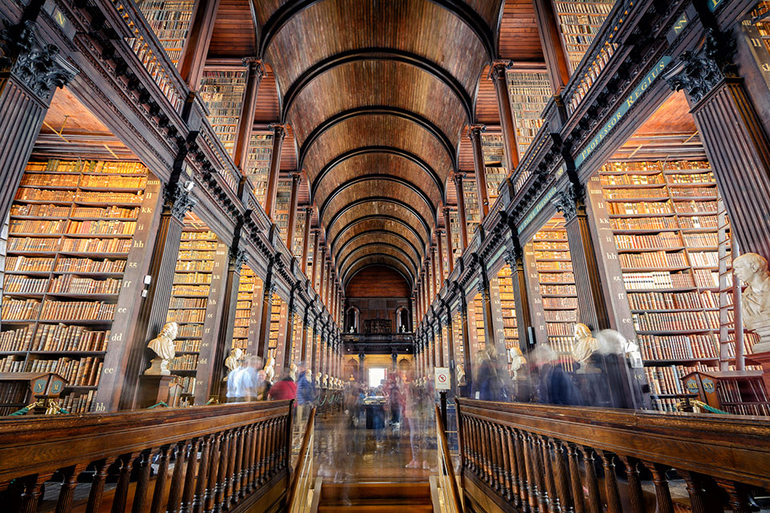
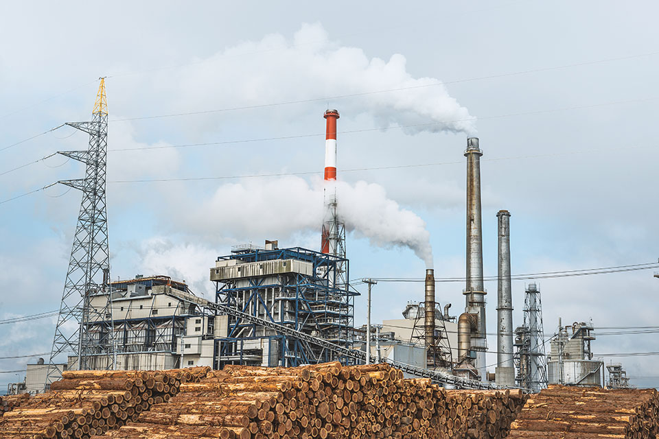
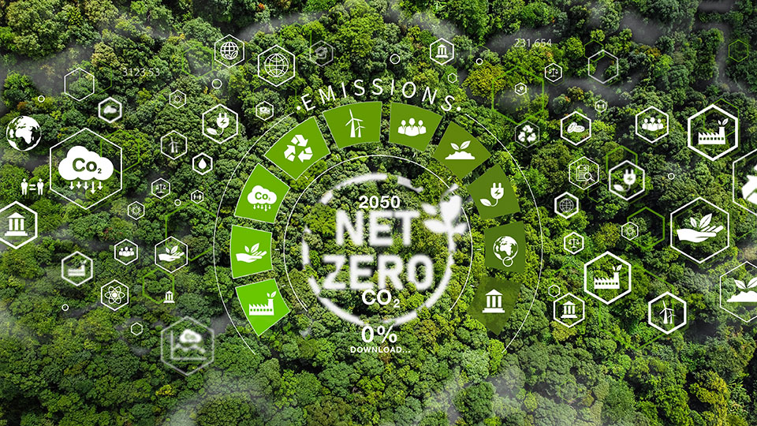

아일랜드 트리니티 칼리지 도서관의 ‘롱 룸(The Long Room)’은 20만 권의 고서가 천장까지 빽빽하게 꽂혀있는 장관을 볼 수 있는 명소다. 길이 65미터에 층고가 12미터나 되는 이 독특한 공간에는 200개 이상의 대형 책장이 고래 갈빗살처럼 일렬횡대로 늘어서 있어 들어가 본 사람은 누구나 그 웅장한 위용에 압도당하고 만다. 코엑스의 별마당 도서관도 13미터 높이의 벽면을 따라 세워진 거대한 서가가 주는 웅장함이 멋이다. 수십 개의 책장에 빼곡히 꽂힌 5만 권의 책은 그 자체로 볼거리이다. 각각 더블린과 서울에 있지만, 이 두 공간을 관통하는 정서는 한 가지다. 바로 책과 지식에 대한 인간의 동경이다. 사다리를 타도 손이 닿지 않는 아득한 높이의 책장 수백 개와 거기에 질서정연하게 꽂혀있는 수십만 권의 책에는 사람들을 불러들이는 무언가가 있다. 그것은 아마도 세상의 모든 지식이 저리 잘 정돈된 채로 뒤죽박죽 섞이지 않고 온전히 보전되기를 바라는 열망이 아닐까? 본래 지식이란 순간에 날아가 버리고 서로 뒤섞여 혼탁해지기 마련이니 말이다. 서고는 그런 염원이 담긴 공간이다. 책은 종이가 아니라 지식으로 봐야 마땅하다.

아일랜드 트리니티 칼리지 도서관최근 몇 년 사이 책의 환경 영향에 관한 관심이 높아지고 있다. 종이를 많이 쓴다는 거다. 책은 분명 지식의 형체일 뿐인데 단순히 종이 뭉치로 취급하는 데는 불편함이 있다. 책을 두고 탄소 운운하는 것은 혹여나 지식에 대한 도전은 아닐는지? 기후위기 시대, 책의 미래는 어떻게 봐야 할까?
고매한 지식도 탄소를 배출한다
보통 종이책 한 권은 약 1kg의 이산화탄소를 배출한다.
한국출판문화산업진흥원에 따르면, 2023년 한 해 국내에서 판매된
종이책이 약 2억 6,000만 권이라니, 대략 26만 톤의 이산화탄소가
배출된 셈이다. 이는 연간 승용차 11만 대가 배출하는 탄소량에
맞먹는다.
책과 관련한 이산화탄소는 주로 삼림 벌채와 종이 생산, 인쇄, 운송
과정에서 배출된다. 매년 전 세계 출판 산업은 수천만 그루의 나무를
베고, 종이 생산에 막대한 양의 물과 화학 약품을 사용한다. 책을
출간해서 포장하고 운송하는 것으로 끝이 아니다. 팔리지 않은 책은
매립지로 버려져서 폐기 과정에서도 탄소가 배출된다. 2020년 기준으로
국내 출판업계는 약 100만 톤의 종이를 사용한 것으로 추정된다.
나무로 환산하면, 약 1,700만 그루를 사용한 셈이다. 종이책은 분명
탄소를 배출한다.

목재가 쌓여 있는 제지공장 전경
세계에서 가장 많이 팔린 책은 무엇일까? 기네스북에 따르면 성경이다.
성경은 전 세계적으로 3천억 부 이상 팔린 것으로 보고된다. 그 외
“돈키호테”, “어린 왕자” 등의 고전 명작도 수십억 권의 판매량을
자랑하는 시대를 초월한 베스트셀러로 손꼽힌다. 고매한 철학과 깊은
울림을 주는 명저는 독자들의 꾸준한 사랑에 힘입어 오랜 세월을 거쳐
지금까지도 지속적으로 출간되고 있다. 책이 종이를 많이 사용해서
환경에 부정적인 영향을 미친다면, 명저일수록 탄소를 더 많이 배출한
셈이다. 그렇다고 출판 부문의 탄소배출을 명저 탓으로 돌릴 수
있을까?
나무가 탄소를 고정하듯이, 책은 지식을 고정한다. 지식을 고정하는
데는 탄소가 배출된다. 책을 지식이 아니라 종이로 바라본다면 명저가
탄소배출 주범이라는 공식이 성립하겠지만, 그러한 낙인찍기에 동의할
사람은 아무도 없을 것이다. 명저가 배출하는 탄소보다는 명저가 품고
있는 지식과 지혜가 인류에게 더 중요하기 때문이다.
프랑크푸르트 도서전에서 맺은 출판사들의 약속
프랑크푸르트 도서전은 70년이 넘는 전통을 자랑하는 세계에서 가장 큰
출판 산업 박람회이다. 올해도 어김없이 10월 15일부터 19일까지
닷새간 독일 프랑크푸르트에서 도서전이 열린다. 지금으로부터 5년 전,
프랑크푸르트 도서전에서는 매우 특별한 행사가 마련되었다.
국제출판인협회(International Publishers Association)를 중심으로 전
세계 150여 출판사가 모여 UN과 함께 “지속가능발전목표 출판인
협약(SDG Publishers Compact)”을 체결한 것이다. 이는 출판 산업이
지속가능한 미래를 창출하는 데 책임을 다해야 한다는 업계의 자발적인
약속이었다.
글로벌 협약은 이후 각국 출판인들의 동참 선언으로 이어졌다. 이듬해
영국의 출판인협회(Publishers Association)는 기후행동을 위한 출판
선언(Publishing Declares)을 론칭했다. 영국 출판 산업의 2050 넷제로
달성과 생물다양성 보전을 약속한 이니셔티브에 현재까지 223개의
출판사가 서명했다.

기후행동 출판 선언에 동참한 출판사들은 이후 자체적으로 지속가능성
정책을 수립했는데, IOP Publishing도 그중 하나다. IOP Publishing의
환경 및 에너지 정책은 에너지 절약과 재생에너지 사용, 재생 용지
사용, 물·전기·가스 사용량 모니터링, 표준 인쇄 중단 및 주문형 인쇄
서비스 제공, 환경 성과 관리를 위한 목표 설정, 종이·골판지 등
폐기물 재활용, 지속가능성 태스크포스 결성, 공급망 전체의 환경 관행
개선, 직원들의 친환경 교통수단 사용 장려 등을 포함한다.
출판 산업의 가장 큰 탄소 배출원이 종이라면 종이 소비를 줄이는 것이
가장 확실한 방법이다. 이와 관련해서 소량 인쇄와 주문 인쇄가 종종
언급된다. 서점의 주문을 받아 필요한 수량만 제작하면 폐기량을 줄일
수 있기 때문이다. 하지만 책의 제작 부수를 줄이는 것이 출판 산업의
지속가능한 대안인가에 대해서는 생각할 점들이 많다. 다른 방법은
재생지 사용을 늘리는 것이다. 하지만 재생지는 책을 제작하는 데
적합한 품질을 보장하지 못하는 문제가 있다. 이때 FSC 산림 인증을
받은 용지를 사용하는 것이 하나의 대안이 될 수 있다. 궁극적으로는
대나무나 옥수수 껍질로 만든 종이와 같은 기술혁신이 필요하다.
종이도 중요하지만 포장과 운송 과정에서도 온실가스를 감축해야 한다.
요즘 서점에 가면 대부분의 책이 슈링크 포장(책을 단단히 감싸고 있는
비닐)돼 있는 것을 볼 수 있다. 이러한 포장 방식은 습기와 먼지,
스크레치에서 책을 보호하는데 유용하지만 환경에는 좋지 않다.
운송에서 배출되는 탄소를 줄이기 위해서 가급적 지역에서 인쇄하는
것도 한 가지 방법이다. 그리고 책 재료와 제작 과정에 대한 정보를
투명하게 공개하면 기후친화적인 책에 대한 소비자들의 선택을 도울 수
있다.
예쁜 책 말고 좋은 책에 미래가 있다
혹자는 책이 배출하는 탄소를 줄이려면 필요한 책만 주문 제작하는 방식으로 바꿔서 근본적으로 책의 제작 부수를 줄여야 한다고 주장한다. 그런데 우리가 인터넷으로 주문하면 될 것을 굳이 서점에 가서 사는 이유가 뭔가? 읽어야 할 책 명단을 시시때때로 작성해 두고 있지 않다면야, 책이 넘쳐나는 서점에서 어떤 책들이 있는지 둘러보고 비교도 해보고 내가 읽고 싶은 한 권의 책을 고르는 게 즐겁고 유익하기 때문이다. 때로는 서점의 책처럼 과잉 공급이 필요한 장르가 있다. 책은 발견되어져야 하는 것이기 때문이다. 추천받은 책만 사 읽고, 아는 책만 찾아 읽어서는 우리의 지식이 확장하지 못한다. 보고 싶은 것만 보는 편향된 독서는 지식의 불균형을 초래한다. 우리는 모르는 것을 읽어야 한다.
이런 맥락에서 전자책이 종이책의 미래가 되지는 못할 것으로
생각한다. 롱 룸과 별마당 도서관을 가득 채운 넘쳐나는 책은 단지 그
볼륨 때문만이 아니라, 무제한적인 선택권을 제공함으로써 우리의
지식과 사고를 자유롭게 한다. 그 선택권은 전자책이 허용하는 전자적
경험으로는 제대로 누리기 어렵다. 게다가 전자책이 탄소를 덜
배출하는 것도 아니다. 전자책 리더기를 생산하는 데서 많은 탄소가
배출되기 때문이다. 리더기 1대를 만들 때 배출되는 탄소를 상쇄하려면
무려 450권의 전자책을 읽어야 한다고 한다. 한국인의 1인당 연평균
독서량이 2023년 기준으로 3.9권인 점을 고려하면 115년이 걸리는
셈이니 사실상 불가능한 숫자다.
그렇다면 기후위기 시대에 종이책의 탄소배출 문제는 어떻게 해결할 수
있을까? 가장 이상적인 방법은 영양가 없는 책은 만들지 말고, 좋은
책만 만드는 것일 테다. 출판업계도 소비자도 책의 본질에 좀 더
집중할 필요가 있다. 요즘 서점에 가면 알록달록 반짝반짝 화려하고
예쁜 책들이 많다. 시장에서 소비자들의 선택을 받으려면 어쩔 수 없다
하더라도 미적 효과를 위해 에폭시, 코팅, 하드커버 등 환경 영향이 큰
요소도 거침없이 사용한다. 책이 여느 소비재 상품과 다를 바 없다면
환경 영향에 대한 책임도 똑같이 져야 마땅하다. 하지만 책은 지식이
아니던가. 책의 지속가능성을 위해서 지식산업 본연의 모습으로 돌아와
껍데기 말고 알맹이에 더 집중할 필요가 있다.
책의 탄소발자국보다 더 치명적인 ‘독서 기피’
책과 관련한 가장 큰 문제는 사실 책을 읽지 않는 독서 기피 현상이다. 크게 보면 독서 기피는 출판 산업이 배출하는 온실가스보다 더 치명적이다. 교양 수준이 낮고 문해력이 부족하며 편향된 사고를 하는 사람들이 모인 사회에 높은 기후회복력을 기대하기는 어렵기 때문이다. 기후 리터러시는 SNS로 접할 수 있는 정보만으로는 함양할 수 없는 통합적 사고의 영역이다. 책을 읽지 않는 사회에 기후 리터러시는 없고, 낮은 기후 리터러시는 곧 기후 대응 실패로 이어진다. 책은 많이 만들어서 많이 읽는 것이 바람직하다. 양질의 지식을 잘 선별해서 담백하게 담아낼 때 책의 탄소발자국은 줄어들고 책의 미래는 더 희망차게 펼쳐질 것이다.